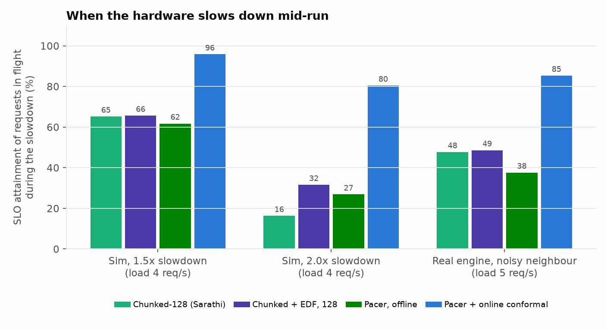
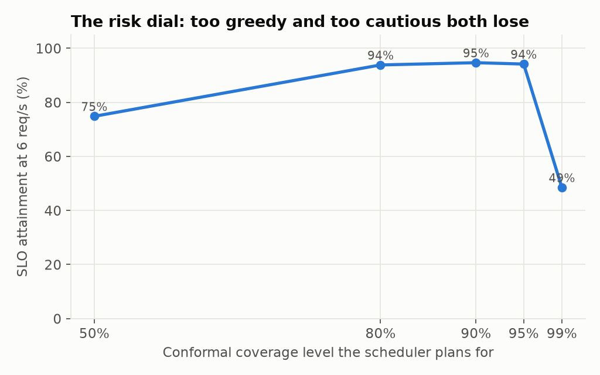

Continuous batching [8] lets an LLM server run prefill (prompt processing) and decode (token generation) for many requests in the same forward pass. Every added prefill token slows all requests that are mid-generation, raising time per output token (TPOT); every withheld token delays someone's time to first token (TTFT). Serving systems are judged on goodput, requests per second meeting both SLOs [7]. Chunked prefill [2] caps each step at a fixed token budget, which must be tuned per model, accelerator, SLO and workload.
We make two observations. First, the best budget moves substantially: across our six workloads the best fixed budget varies between 64 and 256 tokens, and a roofline analysis of Llama-3-8B predicts a 3x spread across current NVIDIA GPUs (Section 5.6). Second, the hardware moves at run time: co-tenants on shared accelerators, thermal throttling and interference change step latency by tens of percent. A scheduler that packs batches up to a latency model's prediction is exactly the scheduler that breaks when the model goes stale.
Pacer's contribution is to treat batch sizing as a risk-controlled prediction problem. It replaces the static budget with a per-step optimisation against a learned latency model and replaces the safety margin with an online conformal bound that recalibrates after every step. We contribute: (1) a from-scratch serving engine with paged KV cache, continuous batching and chunked prefill, verified token-exact against a dense reference; (2) the Pacer scheduler; (3) a step-level guarantee and its translation to per-request TPOT (Section 4); (4) an evaluation on real execution, real production traces and real interference, including negative results.
Prefill and decode. A decode step streams all weights and each request's KV cache from memory regardless of batch size, so its cost is dominated by bandwidth; prefill tokens add arithmetic that is nearly free until the step reaches the accelerator's ridge point. Conformal prediction. Split conformal prediction turns any point predictor into a set or bound with finite-sample marginal coverage under exchangeability. Adaptive conformal inference (ACI) [5] drops exchangeability: it updates the miscoverage level αt+1 = αt + γ(α − errt) and guarantees that the empirical miss rate converges to α for any sequence. Scheduling. Maximising the number of on-time jobs on one machine (1‖ΣUj) is solved exactly by Moore-Hodgson [6] in O(n log n).
For a step with prefill chunks (ni, Li) and decodes with contexts cj, we use features x = [1, Σni+|D|, ΣniLi, Σcj, |D|·max cj, |P|, |D|] (fixed cost, GEMM tokens, prefill attention FLOPs, decode KV bytes, padded attention work, per-sequence overheads) and fit non-negative coefficients minimising relative error. Each coefficient has a physical unit, which is why the model extrapolates (Table 4). Prediction is a dot product.
After each step Pacer observes rt = at/pt, the ratio of actual to predicted latency (including scheduling overhead). It keeps a window of recent ratios and sets qt to their empirical (1−αt)-quantile, updating αt by the ACI rule with target α = 0.1 and γ = 0.02.
Given the running decodes D and the ordered prefill queue, Pacer binary-searches the largest prefill budget c such that qt·p(D, chunks(c)) ≤ τ, where τ is the TPOT SLO. Chunks are filled greedily from the head of the queue.
Each waiting prompt j has deadline dj = arrivalj + TTFT SLO and a processing time equal to its marginal cost under the latency model, scaled by the current median ratio. Pacer runs Moore-Hodgson: scan in deadline order, accumulate processing time, and whenever the running total passes the current deadline, evict the longest scanned prompt to a late set. On-time prompts are served in deadline order, then late ones in arrival order. Late prompts are still served; they stop consuming capacity that could save others.
Proposition 1 (step-level overshoot). Let τ be the TPOT SLO and suppose that at every step where a decode-only batch is predicted feasible, Pacer selects a batch with qtpt ≤ τ. Let ρT be the fraction of the first T steps where even the decode-only batch is predicted infeasible. Then the fraction of steps whose actual latency exceeds τ is at most
α + (max(α1, 1−α1) + γ) / (γT) + ρT.
Proof. On a feasible step without an ACI miss, at = rtpt ≤ qtpt ≤ τ. So overshoots occur only on misses or infeasible steps. Gibbs and Candès [5, Prop. 4.1] bound the empirical miss frequency by α plus the second term for every sequence of ratios. □
Corollary 1 (per-request TPOT). If ratios are bounded by R and qt ≥ qmin, a request whose decode steps include a fraction f of misses (and no infeasible steps) has TPOT ≤ τ·(1 + f·(R/qmin − 1)).
The proposition is distribution-free; the corollary makes explicit what is not guaranteed: per-request SLOs depend on how misses cluster within requests and on the tail ratio R. We therefore measure the mapping empirically (Section 5.1). Moore-Hodgson's optimality holds exactly for the single-server abstraction with known processing times; batching, decode interference and prediction error make it a heuristic in practice.
Setup. A Llama-architecture decoder (RMSNorm, RoPE, GQA, SwiGLU; 63M parameters, FP32) runs on a 4-core cloud CPU; no GPU was available, so Section 5.6 is an analytic projection. Workloads: Poisson and Gamma (CV=3) arrivals with lognormal lengths, and replays of the Azure LLM inference traces [4] (chat and code), with time compressed and lengths scaled by 0.2. SLOs are TTFT 2 s and TPOT 100 ms unless stated. Capacity is the highest load at which at least 90% of requests meet both SLOs. Baselines: prefill-first (vLLM v0 [1]), chunked prefill with fixed budgets (Sarathi-Serve [2]), and chunked prefill with Pacer's deadline ordering (a strengthened baseline). A discrete-event simulator shares the serving loop, schedulers and memory manager with the real engine and matches its SLO attainment to within 3.3 points on average over 40 paired runs.
On the real engine, a neighbour process spinning 35% of one core during the middle 40% of each run slows steps by roughly 1.5x. Table 1 reports attainment of requests in flight during the slowdown at 5 req/s; Figure 1 adds simulator results with 1.5x and 2.0x slowdowns.
| Real engine, noisy neighbour, 5 req/s | In drift | Overall |
|---|---|---|
| Chunked, 128 tokens | 47.7% | 71.5% |
| Chunked + deadline ordering, 128 tokens | 48.6% | 72.0% |
| Pacer, offline calibration | 37.6% | 66.0% |
| Pacer, online calibration | 85.3% | 92.0% |

Offline-calibrated Pacer is the worst policy under drift: it fills each step to the bound it believes, so every step overshoots once the hardware slows; static budgets leave accidental slack. With online calibration the observed fraction of steps over the bound was 9.9-10.2% (synthetic), 10.1-10.4% (Azure chat), 8.5-9.6% (noisy neighbour) and 9.4-10.1% (24 simulated drift runs), against a 10% target.
| Real engine | 5 req/s | 6 req/s | 7 req/s | Capacity |
|---|---|---|---|---|
| Prefill-first | 77.5% | 9.0% | 4.5% | 4.19 |
| Chunked, best fixed (128) | 86.0% | 51.0% | 21.0% | 4.71 |
| Chunked + deadline ordering (128) | 91.5% | 89.5% | 91.5% | 5.75 |
| Pacer, offline | 96.5% | 90.5% | 90.0% | 7.00 |
| Pacer, online | 98.0% | 90.0% | 87.0% | 6.00 |
| Policy | P-100 | P-60 | P-150 | Burst | Az-chat | Az-code | Worst |
|---|---|---|---|---|---|---|---|
| Pacer, offline | 1.00 | 0.99 | 1.00 | 0.98 | 0.97 | 1.00 | 0.97 |
| Pacer, online | 0.99 | 1.00 | 0.96 | 1.00 | 1.00 | 0.94 | 0.94 |
| Chunked + EDF, 128 | 0.99 | 0.70 | 0.94 | 0.88 | 0.95 | 0.99 | 0.70 |
| Chunked + EDF, 64 | 0.91 | 0.95 | 0.87 | 0.62 | 0.82 | 0.70 | 0.62 |
| Chunked, 128 | 0.79 | 0.70 | 0.76 | 0.68 | 0.80 | 0.45 | 0.45 |
| Prefill-first | 0.66 | 0.65 | 0.74 | 0.61 | 0.63 | 0.00 | 0.00 |
| Model (600 profiled steps) | Random split | Extrapolation |
|---|---|---|
| Roofline, measured peaks + 2 fitted scalars | 50.2% | 81.0% |
| Gradient-boosted trees | 17.9% | 50.8% |
| Linear + GBDT residual | 9.9% | 5.0% |
| Physics-informed linear | 7.3% | 4.4% |
| Capacity (req/s, 5 seeds) | Poisson | Azure chat | Azure code |
|---|---|---|---|
| Pacer | 6.57 | 8.46 | 2.00 |
| EDF instead of Moore-Hodgson | 6.54 | 8.60 | 1.65 |
| FCFS ordering | 5.22 | 7.30 | 1.07 |
| with slack banking | 6.38 | 8.53 | 2.00 |
| Best fixed budget, FCFS | 5.19 | 7.01 | 1.08 |

For Llama-3-8B in BF16 with 32 decodes at 2k context, a roofline model from datasheet peaks gives the prefill tokens that can join a decode step before it becomes compute-bound: about 200 on A100, 424 on H100, 592 on L4 and 624 on L40S. These are projections, not measurements; the repository includes a one-command GPU reproduction.
PagedAttention/vLLM [1] introduced paged KV caches; Orca [8] continuous batching; Sarathi-Serve [2] chunked prefill with a fixed budget; DistServe [7] optimises goodput by disaggregating prefill and decode; Splitwise [4] studies phase splitting and released the traces used here. Conformal prediction has been applied to forecasting and control [3, 5]. We are not aware of prior work that sizes LLM serving batches with an online conformal latency bound and evaluates it under live interference.
Measurements use a CPU and a small model; absolute latencies do not transfer, though the prefill/decode structure and the drift mechanism do. Trace replay compresses time and lengths. Requests reserve their full KV footprint at admission (no preemption). Pacer raises goodput partly by letting hopeless requests wait, worsening their TTFT. Section 4 guarantees step-level coverage only; per-request effects are measured, not proven.